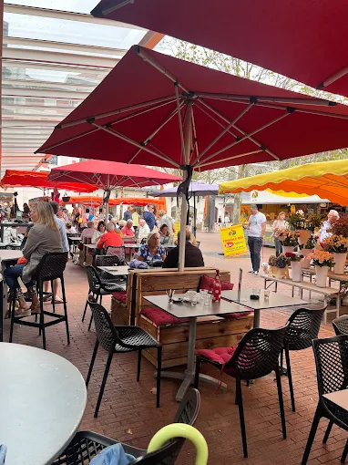
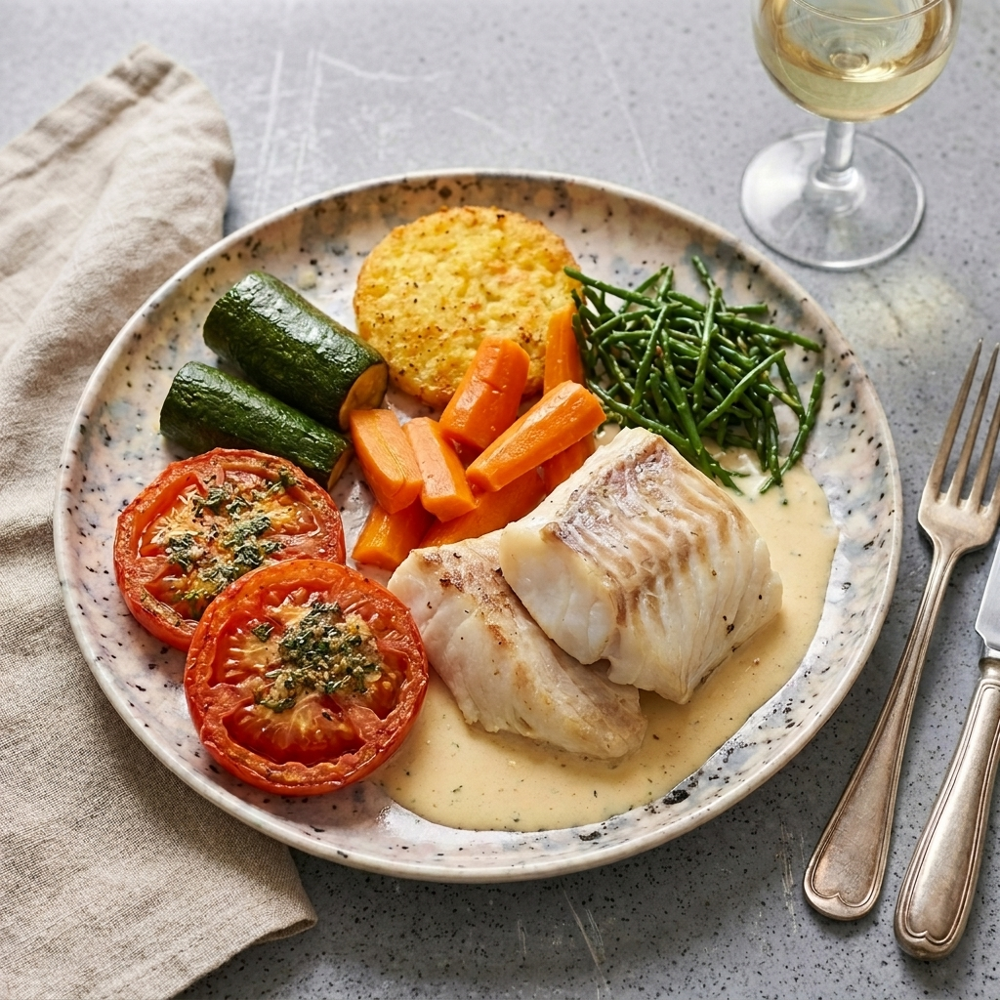
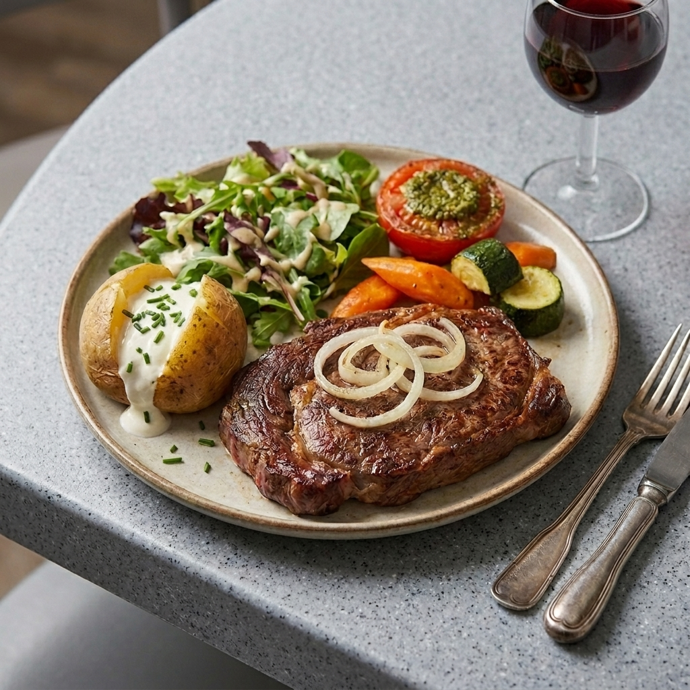
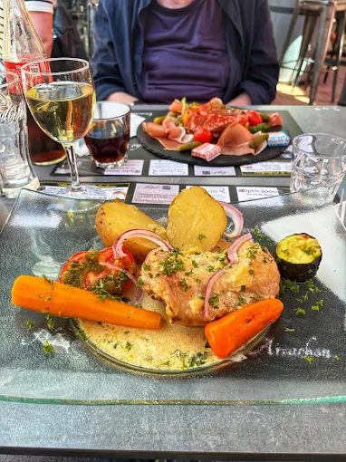
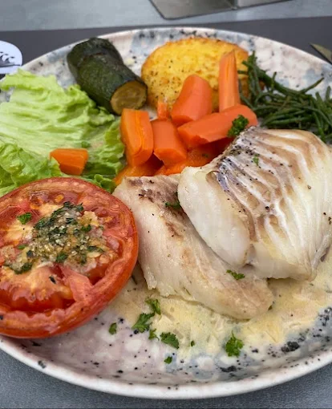
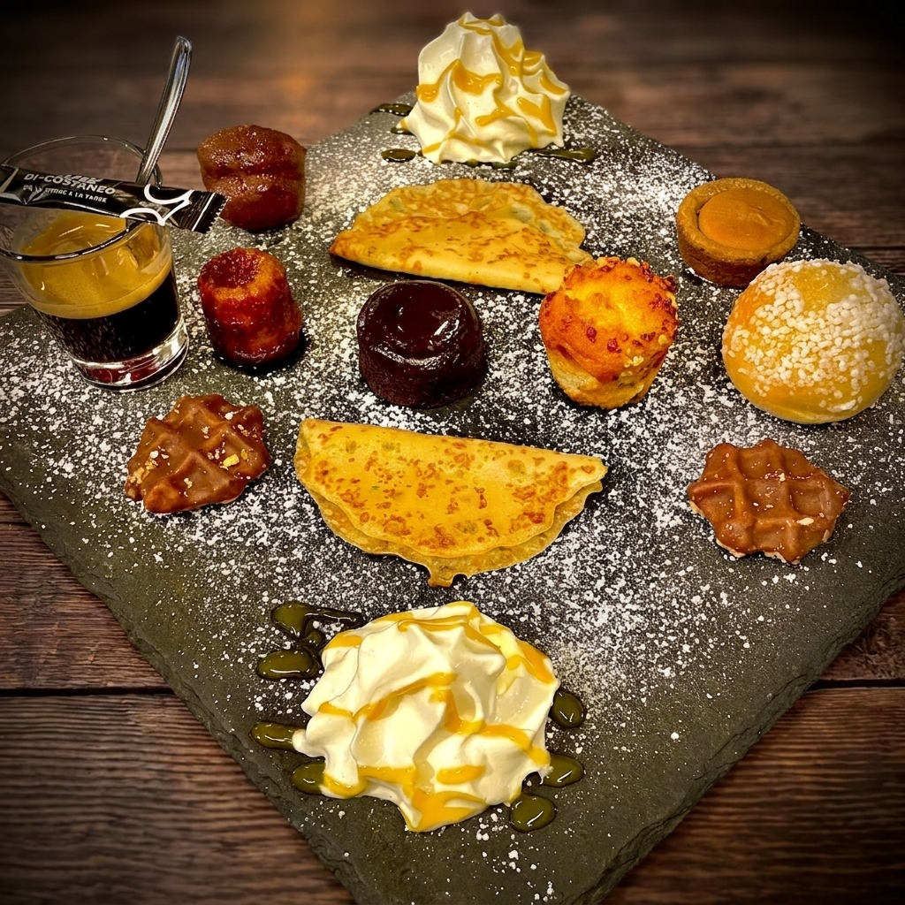

La cuisine qui ressemble
au Bassin
Cuisine authentique & généreuse du Sud-Ouest · Marché d'Arcachon
Cuisine authentique & généreuse du Sud-Ouest · Marché d'Arcachon
Notre histoire
Niché au cœur du Marché couvert d'Arcachon, place des Marquises, Le Bouchon du Marché est bien plus qu'un simple restaurant. C'est un endroit où l'on s'attarde, où l'on revient, où l'on se régale sans chichi.
Notre cuisine s'inspire de la grande tradition du Sud-Ouest : généreuse, honnête, parfumée. Des produits frais sélectionnés chaque matin au marché, des recettes qui sentent bon la maison, une équipe qui vous reçoit comme des amis de longue date.
En terrasse sous les parasols colorés du marché ou en salle, laissez-vous emporter par une cuisine qui a du caractère, à deux pas du bassin d'Arcachon.

Sélectionnés chaque matin sur place, au cœur du marché couvert d'Arcachon.
Tout est fait sur place. Pas de réchauffé, pas d'industriel. Du vrai, du bon.
Déjeuner ou dîner en plein air sous les parasols du marché, au cœur d'Arcachon.
Du lundi au samedi dès 7h30 jusqu'à 23h, le dimanche jusqu'à 16h.
En images






Questions fréquentes
Oui, nous sommes ouverts le dimanche de 7h30 à 16h00. Du lundi au samedi, de 7h30 à 23h00. Ouvert 7 jours sur 7, toute l'année.
Place des Marquises, 33120 Arcachon, au cœur du Marché couvert d'Arcachon, à deux pas du front de mer.
Appelez-nous directement au 05 56 54 85 11. Nous sommes disponibles 7 jours sur 7.
Cuisine authentique et généreuse du Sud-Ouest : entrecôte grillée, cabillaud beurre blanc, confit de canard, plat du jour mijoté, desserts maison. Produits frais sélectionnés chaque matin au marché d'Arcachon.
Oui, terrasse animée sous les parasols colorés du Marché couvert d'Arcachon, idéale pour déjeuner ou dîner en plein air.
Oui, chaque jour un plat du jour cuisiné maison selon les arrivages frais du marché. Appelez le 05 56 54 85 11 pour le connaître.
Oui, le parking du Marché d'Arcachon est accessible à proximité immédiate, Place des Marquises.
Venir nous voir
| Lundi | 07h30 – 23h00 |
| Mardi | 07h30 – 23h00 |
| Mercredi | 07h30 – 23h00 |
| Jeudi | 07h30 – 23h00 |
| Vendredi | 07h30 – 23h00 |
| Samedi | 07h30 – 23h00 |
| Dimanche | 07h30 – 16h00 |
📍 Au Marché couvert d'Arcachon, Place des Marquises – à deux pas du front de mer.
Appelez-nous directement pour réserver. Nous vous accueillons 7 jours sur 7 autour d'une cuisine généreuse du Sud-Ouest, au cœur du Marché d'Arcachon.
📞 05 56 54 85 11